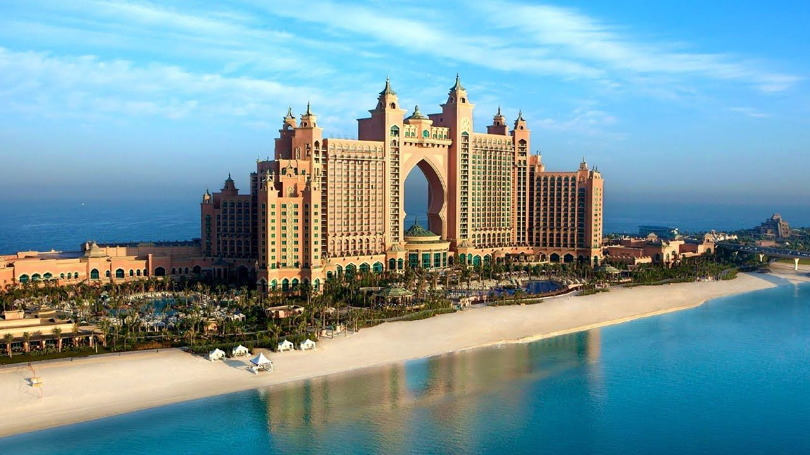

Places to visit in Dubai
1. Burj Khalifa

The Burj Khalifa is the tallest building in the world and one of the Dubai's must visit attractions. This majestic building is located in the heart of the city and is a hub of activity day and night. You can capture perfect viewd of the city from the observation decks at levels 124 and 125. This building is 829m high. This building has many world records like, tallest free standing structure in the world, tallest building in the world, highest stories in the world and many more.
2. Dubai Mall

Dubai Mall is the world's largest destination for shipping, entertainment and leisure with over 1200 retail shops. It has aroung 150 restaurants including an aquarium, ice rink and an underwater zoo. Even an entire day spent here is not enough to see it all. The world’s largest mall has grown even larger with the 2019 opening of Dubai Mall Zabeel, a significant expansion that welcomed a host of new lifestyle experiences, dining options, retail options and 3,000 new parking spaces.
3. Dubai Water Canal

Dubai Water Canal is a 3.2-kilometre-long waterway extending from the Creek in Old Dubai through Business Bay before finding its way to the Arabian Gulf. There are also five pedestrian bridges that snake their way across the iconic waterway, so it's the perfect spot to stroll and take in classic views of the city at its best. The man-made channel, which opened in 2016, meanders through the centre of the city, transforming the face of Downtown Dubai and turning it into a waterfront destination.
4. Museum of the Future

Dubai's most famous architectural landmarks, The Museum of the Future is founded by the Dubai Future Foundation. the museum explores how society could evolve in the coming decades using science and technology. Visitors can look beyond the present and towards the future's limitless possibilities. It incorporates elements of traditional exhibitions, immersive theatre and themed attractions, so visitors can look beyond the present and towards the future's limitless possibilities.
5. Atlantis, The Palm

Being one of Dubai's most visited locations you can expect endless entertainment with top-rated dining outlets, unique aquarium experiences and outstanding architectural feats at this world-famous luxury hotel. The massive resort spans several acres, offering over 1,500 rooms, exclusive suites and 'super suites', including coveted underwater rooms. Encounter a world of wonder as you walk through the lobby, with exquisite decor, intricate sculptures and ambient lighting.